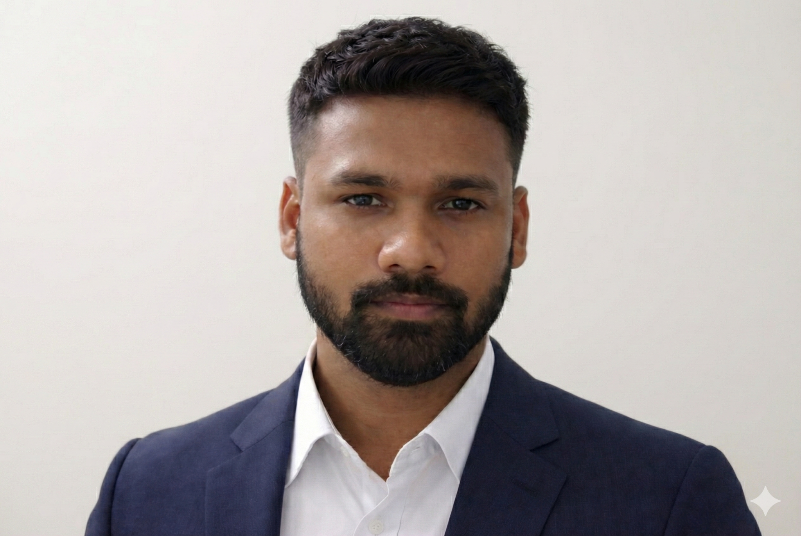

◌
Decision-ready analytics
From KPI architecture to enterprise dashboards, I build reporting systems that help teams move faster with confidence.
Power BI, DAX, Microsoft Fabric, OneLake, SQL modeling, operational analytics.
I design enterprise dashboards, modern data pipelines, AI automation workflows, and cloud-backed operational systems that turn complex business needs into reliable products.

My work sits at the intersection of analytics, automation, cloud operations, and business enablement. The goal is always the same: reduce friction, improve visibility, and create systems that scale cleanly.
From KPI architecture to enterprise dashboards, I build reporting systems that help teams move faster with confidence.
Power BI, DAX, Microsoft Fabric, OneLake, SQL modeling, operational analytics.
I design AI and workflow automations that reduce manual work, speed up execution, and improve consistency.
Python pipelines, n8n, CrewAI, LangChain, Microsoft Copilot, API-led workflow design.
I support and improve enterprise environments across Azure, AWS, Microsoft 365, IAM, CI/CD, and security hardening.
Infrastructure operations, deployment consistency, SSO, governance, uptime, support maturity.
Selected results drawn from delivery across enterprise analytics, IT operations, automation, and cloud platform support.
A modern mix of analytics, automation, cloud infrastructure, data engineering, and business-facing execution.
End-to-end analytics pipelines, KPI modeling, reporting systems, and executive visibility.
Workflow automation, prompt orchestration, intelligent reporting, and production-ready support scripts.
Operational ownership, deployment maturity, security posture, and environment consistency.
These case-study summaries are based on actual delivery areas from my recent experience in analytics, automation, and enterprise systems.
Re-architected fragmented reporting into a connected analytics layer using Microsoft Fabric, OneLake, SQL ELT pipelines, and Power BI.
Problem: reporting was manual, inconsistent, and too slow for business stakeholders.
Solution: designed scalable dashboards, reusable DAX measures, and cleaner data flows that reduced repetitive reporting effort.
Result: leadership gained faster visibility, cleaner metrics, and more reliable reporting cycles.
Built Python and AI-assisted automations to accelerate repetitive reporting, insight generation, content operations, and internal workflow execution.
Problem: analysts and ops teams were spending too much time on repetitive manual steps.
Solution: implemented Python scripts, intelligent prompt workflows, and automation tools like n8n and LangChain.
Result: faster delivery, reduced manual effort, and more scalable day-to-day execution.
Supported secure enterprise environments spanning LMS administration, Microsoft 365, AWS, Azure, Auth0 SSO, and policy hardening.
Problem: enterprise systems needed stronger reliability, easier access control, and better provisioning workflows.
Solution: automated user administration, improved security headers, supported IAM and SSO, and maintained multi-environment consistency.
Result: stronger compliance posture, lower admin overhead, and more dependable platform experience.
From operations to senior analytics and cloud-backed technical ownership, each role expanded both scope and impact.
Leading data, BI, automation, LMS administration, cloud support, and secure internal application delivery.
Owned IT operations, mentoring, cloud administration, reporting, and workflow improvements across a multi-user environment.
Built deep strength in technical support, infrastructure operations, SaaS administration, BI reporting, cloud security, and asset management.
Available for senior analyst, data, BI, AI automation, and cloud-enabled technical roles.